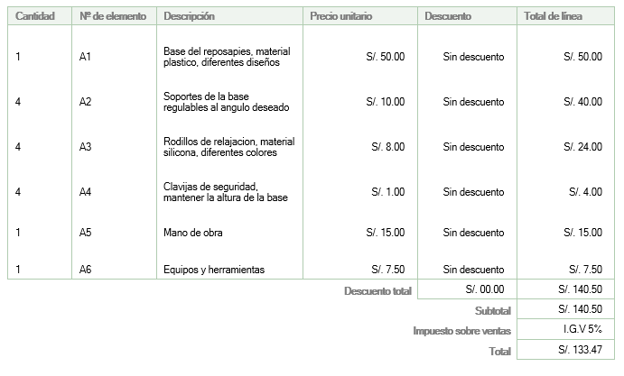
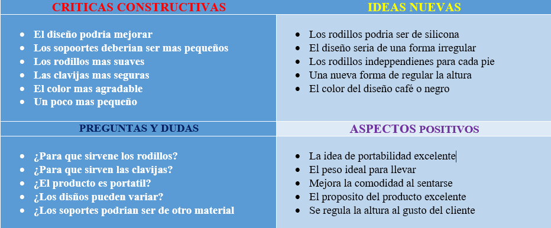

6. Prototipo y testeo
Aquí vamos a crear elementos tangibles artefactos, maquetas o storyboard o actividades simuladas como sketch que nos permitan a poner a prueba nuestras ideas, interactuar con ellas, debatir y acercarnos a la solución final.
Un prototipo nos permite fallar barato y fallar seguido hasta encontrar el camino que buscamos, además podemos desarrollar distintas ideas sin tener que comprometernos con ninguna.

BOSQUEJO DEL PRODUCTO.

COSTOS.
VIDEO DE LA ENTREVISTA.

MALLA RECEPTORA.
1. Desarrollan un Diagrama Gantt para ejecutar la implementación del proyecto.
El diagrama de Gantt es una herramienta gráfica cuyo objetivo es exponer el tiempo de dedicación previsto para diferentes tareas o actividades a lo largo de un tiempo total determinado. A pesar de esto, el diagrama de Gantt no indica las relaciones existentes entre actividades.
Hacer click para descargar el archivo (Excel).
2. Elaboran una lista con los costos del proyecto
la estimación de los costos es un proceso que consiste en el desarrollo de una aproximación de los recursos monetarios que se necesitarán para completar las actividades que demandará el proyecto. Es una predicción hecha sobre la base de la información que está disponible en un determinado momento. Un costo óptimo para el proyecto se logra, entre otros aspectos, tomando en consideración el sopesar los costos y riesgos, tales como fabricar o comprar un insumo o bien intermedio, comprar el local en lugar de alquilarlo, así como el intercambio de recursos. Los costos estimados no son montos inamovibles. Deben ser revisados y ajustados en el transcurso del proyecto para que reflejen los detalles adicionales en tanto estos se hacen disponibles. La estimación del costo aumenta su exactitud conforme avanza el proyecto.
Hacer click para descargar el presupuesto (Word).3. El proyecto es implementado y/o Desarrollan la campaña de alto impacto (creando un video publicitario acerca del producto y compartiendo en redes sociales).
A continuacion presentamos un diseño publicitario.
4. El producto o servicio interactúa con el usuario.
Presentamos un video con una entrevista realizado a un estudiante de TECSUP.
5. Realiza una malla receptora de información.
El diagrama de Gantt es una herramienta gráfica cuyo objetivo es exponer el tiempo de dedicación previsto para diferentes tareas o actividades a lo largo de un tiempo total determinado. A pesar de esto, el diagrama de Gantt no indica las relaciones existentes entre actividades.
Hacer click para descargar el archivo (Word).6. Realizan mejoras al producto o servicio en función al feedback del usuario.
Se denomina feedback a la instancia de retroalimentación o respuesta en el proceso de comunicación, y que supone una inversión de la linealidad emisor-receptor. ¿Más claro? Quien emitió el mensaje (emisor) se dispone ahora a ser quien recibe el mensaje (receptor) en cuanto el receptor de la primera instancia del proceso de comunicación ahora brindará una respuesta al mensaje emitido en esa primera instancia.